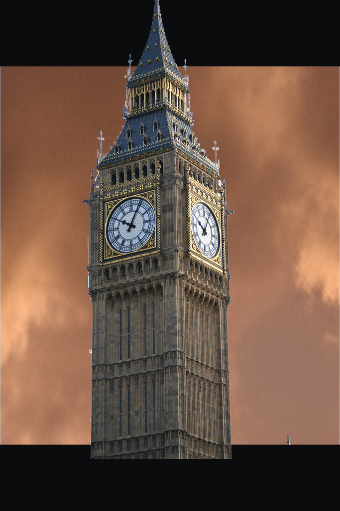
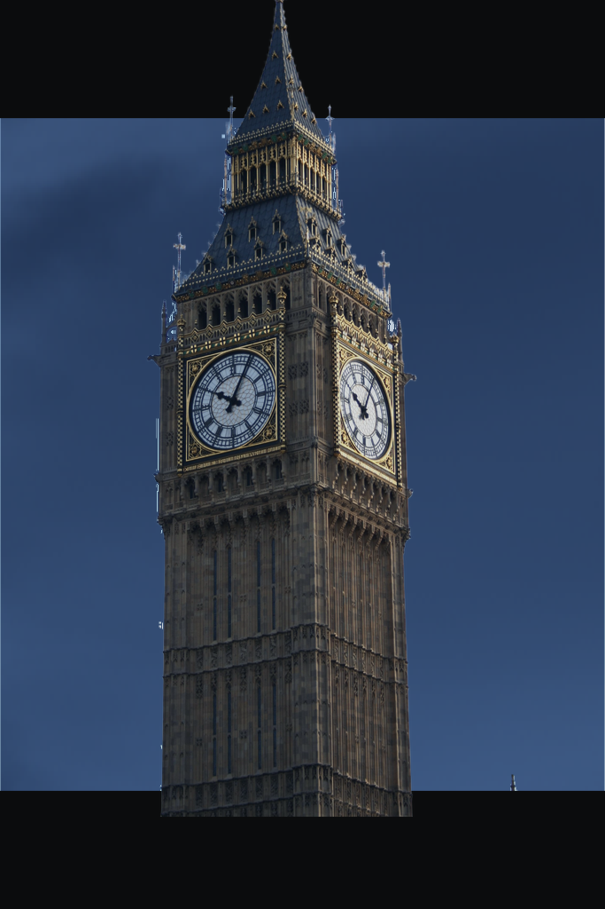
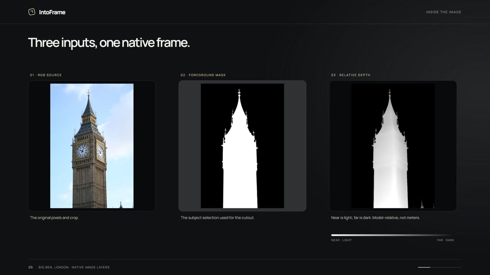

个人项目 · 互动照片原型
IntoFrame：让普通照片突破画框
Make your photos come alive.
我想让照片多一点可以探索的空间，而不只是换个滤镜。IntoFrame 为照片换上新的天空，加入电影画幅，让原来的主体越过黑边，再通过轻微视差，给静止的画面一点纵深。
这页展示真实样例和完整影片，不提供新照片上传或在线 GPU 推理。
实际效果与完整演示
影片包含真实浏览器操作，处理中间的等待经过剪辑。30 FPS 是影片的编码规格，不是浏览器实时性能测试结果。照片作者见素材署名，影片与提取帧沿用 CC BY-SA 4.0。
先看照片发生了什么。
左侧原图，右侧实际 PNG 导出。
这次演示选了四张建筑照片。天空比较开放，建筑轮廓也比较明确，能更直接地看出换天与破框的关系。下方展示的是保存的真实生成结果，不代表所有照片、所有风格都能稳定成功。
保留塔楼，换上粉色天空。原图下方已有裁切，不能通过视差补出缺失的建筑。
照片：Massimo Catarinella · CC BY-SA 3.0；结果为改编。这里展示蓝调傍晚版本。Golden Hour 的上方天空有重复横带，因此没有把那一版作为成功效果展示。
照片：Pauloleong2002 · CC BY-SA 4.0；结果为改编。没有重画街道和行人。远处屋顶与树木边缘仍可能留有细小色缝。
照片：PortableNYCTours · CC BY-SA 4.0；结果为改编。塔身之外的遗迹仍来自原图。天空中原有小飞机的边缘处理还不够干净。
照片：Joe deSousa (Mustang Joe) · CC0 1.0；结果为改编。同一张大本钟照片的三种氛围


同一原图与作者：Massimo Catarinella · CC BY-SA 3.0。三张结果均为天空替换与合成改编，沿用该署名及许可。
从上传，到一张可以探索的照片。
- 上传照片。选择 JPG、PNG 或 WebP，完成主体和天空分析；不适合换天的照片会得到原因提示，而不是一张伪造的结果。
- 选择氛围。Dreamy Pink、Golden Hour 与 Cinematic Night 改变天空风格，不是让模型任意重画整张照片。
- 点击 Generate。生成天空并合成结果，再播放原图、背景、黑边与主体依次进入的六秒转变动画。
- 探索与对比。画面准备好后会轻微自动移动；按住并左右拖动可以接管视角，松手后平滑恢复。Before/After 用来查看变化，也可以重播转变动画。
- 下载 PNG。保存当前构图的中心静止画面，包含电影黑边和破框主体，不包含交互视差或动画。
仓库中附带四组预计算建筑样例。按 README 在本地启动前端即可查看样例，无需配置 GPU；上传并处理自己的新照片仍需要本地 Python/CUDA 后端。本案例页本身不是该前端的在线部署。
把生成与交互分开。
前端由 React、TypeScript 和 Vite 构建；FastAPI 与 PyTorch 承担本地图像处理。BiRefNet 提取主体 Alpha，独立的 SegFormer 天空识别确定哪些地方可以改，Stable Diffusion v1.5 Inpainting 生成新的天空背景。合成时再恢复原始主体，并尽量保留非天空环境。
电影黑边不是盖在最终图片最上面的一层：背景留在画幅内，主体放到黑边上方，才能产生越框的效果。Remotion 负责网页中的照片转变动画，以及上方完整演示影片；它不负责替代图像推理。

Depth Anything V2 Small 对照片做一次相对深度预测，保留高精度 float32 数据。Three.js 随后利用已有纹理和深度，在浏览器里绘制有限幅度的空间变化。图像推理发生在上传和生成阶段，交互时不逐帧请求 AI。
我更在意：动起来之后，哪里会穿帮？
我没有把这个项目做成可以自由环绕建筑的工具。单张照片没有提供背面和被遮挡区域的信息，增加相机幅度很容易把这些缺口暴露出来。现阶段，我选择先把小范围内的观看体验做好。
- 让图层各司其职
- 主体、静止黑边、保留场景和新天空分开处理。天空不是前景的一部分，主体也不能被画幅一并裁掉。
- 新天空放在远处
- 生成天空不继承原背景的深度形状，避免云层跟着原先的建筑轮廓弯折；主体与保留场景共享原始深度关系，尽量减少接触位置错开。
- 保留精度，约束运动
- 主体继续使用原生浮点深度，而非仅依赖显示用的 8 位灰度图。相机移动同时受源图裁切与构图限制；深度缺失或不可靠时，保留静态预览。
- 不同出口，用对资源
- Before 使用原始内容，After 使用对应风格的图层；转变动画与静态导出沿用正确的构图。下载时不截取正在移动的浏览器画面。
- 先让人看见真实样例
- 预计算样例保留主体、深度与对应天空结果。访问者在本地启动仓库前端后，可以先了解效果，再决定是否配置新照片处理环境。
它还不是一张真正的三维照片。
这是受限视角的 2.5D 空间效果，不是完整三维重建。相对深度不等于米制距离，也不能恢复建筑背面或准确的墙面朝向。
Cinematic Night 的蓝调傍晚依赖天空替换与主体、保留环境的温和颜色统一，并没有重建物理光照，也没有消除原照片里的白天阴影。
目前更适合轮廓清楚、天空开放的照片。复杂镂空、远处树梢、屋顶和部分边缘仍可能失败；演示也保留了台北 101 某一风格的天空重复问题。功能检查通过，不等于每张结果都通过视觉验收。
下一步，我想先改善复杂轮廓与旧天空残留的处理，并让不适合生成的原因更容易理解。主体选择和局部编辑等能力仍是后续方向，不是这一版已经完成的功能。
源码、素材与署名。
本页依据 02ecc568… 参考提交整理，四组原图、结果和逐项许可证已随图标明。原图是项目公开样例中的方向校正与缩放版本；结果为真实 PNG 导出，增加了天空替换、画幅与主体合成。
完整影片及其提取帧沿用 CC BY-SA 4.0。大本钟照片与其单独结果沿用 CC BY-SA 3.0，台北 101 和熨斗大厦沿用 CC BY-SA 4.0，顾特卜塔原图为 CC0 1.0。对应作者、原始来源及许可链接可在素材清单逐项核对。
BiRefNet、Depth Anything V2 Small、Stable Diffusion 和 SegFormer 各自适用不同条款；其中当前 SegFormer 权重限非商业研究或评估。Remotion 也不是 MIT 许可。使用或继续发布前，需要分别核对第三方条款。
项目代码尚未选定仓库统一许可证。GitHub 公开不代表所有代码和素材都能按同一许可使用，也不代表已完成比赛平台提交或获得奖项。开发过程中使用了 OpenAI Codex 辅助实现、调试与文档整理。